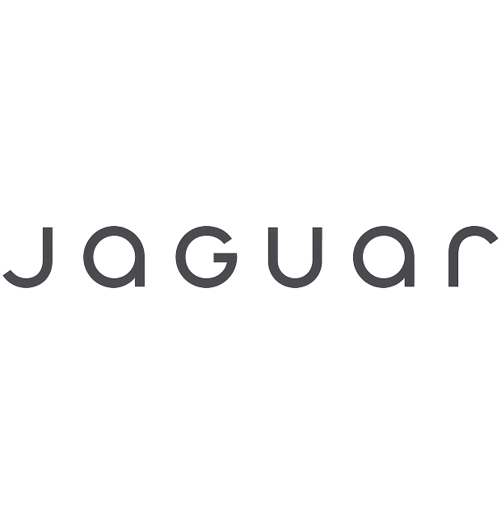
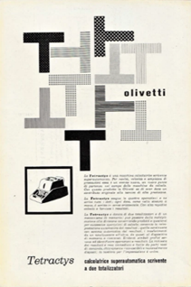
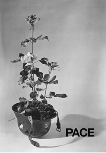
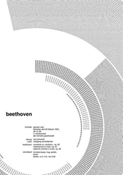

Esempi di utilizzo nella comunicazione visiva
Swarovski
Marchio Swarovski, ideato dal team interno dell'azienda, 1989
Gerry McGovern
Marchio Jaguar attuale, restyling del 2024

Nintendo
Marchio Nintendo, ideato dal team interno dell'azienda, 1977-1980
Giovanni Pintori
Manifesto calcolatrice Tetractys per la Olivetti, 1957

Albe Steiner
Manifesto per concorso del Comitato per la Pace, 1956

J. Müller-Brockmann
Manifesto concerto su Beethoven alla Tonhalle di Zurigo, 1955
